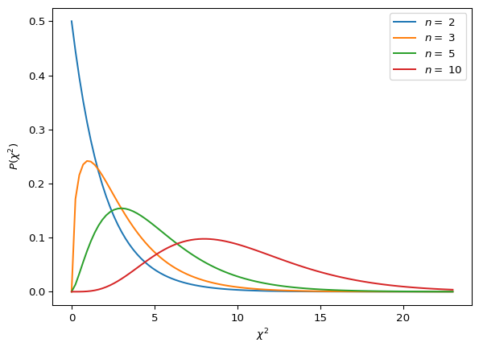
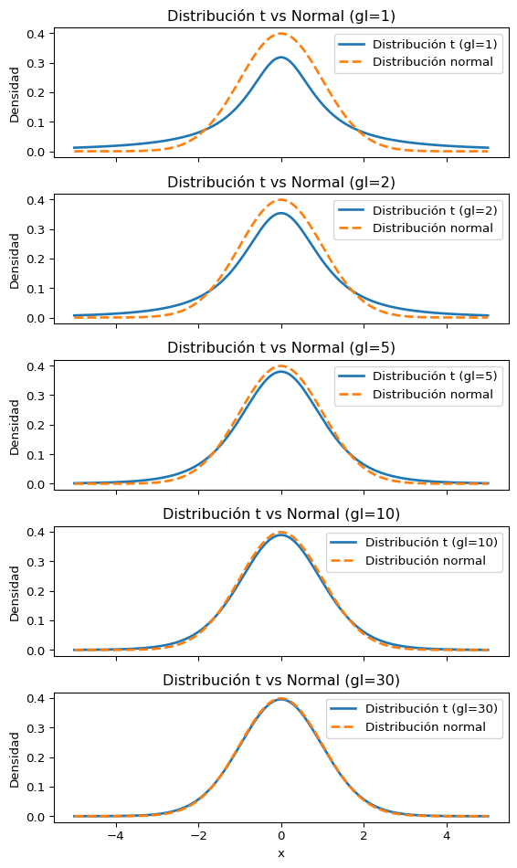

Antes de empezar a hablar de verosimilitud, hablemos un poco sobre uno de los resultados más importantes de la estadística: El teorema central del límite.
El Teorema Central del Límite
Se dice que los físicos creen en este resultado porque es un teorema matemático y los matemáticos creen en este resultado porque funciona en experimentos. En cualquier caso, este resultado provee la justificación para lo que vimos en el ejemplo de arriba.
Consideremos \(N\) variables aleatorias independientes y provenientes de la misma distribución de probabilidad \(x_1, ..., x_N\). Nos interesa calcular la distribución de probabilidad de la suma \(X = \sum_i^N x_i\). Para hacerlo es más fácil trabajar con la función característica \[
\tilde{p}_X(k) = \left\langle e^{-ikX} \right\rangle = \left\langle e^{-ik\sum_i x_i} \right\rangle = \tilde{p}(k_1 = k, ..., k_N = k)\,.
\] De aquí podemos escribir \[
\ln\tilde{p}_X(k) = -i k \sum_i \langle x_i \rangle_c - \frac{1}{2}k^2\sum_{i,j}\langle x_i x_j\rangle_c + ...\,.
\] Si las variables son todas independientes entonces los cumulantes que involucran variables diferentes son todos cero \[
\ln\tilde{p}_X(k) = -i k \sum_i \langle x_i \rangle_c - \frac{1}{2}k^2 \sum_i \langle x_i^2\rangle_c + ...\,,
\] y si además todas vienen de una misma distribución (tal que sus cumulantes son todos iguales) \[
\ln\tilde{p}_X(k) = -i k N \langle x_1 \rangle_c - \frac{1}{2}k^2 N \langle x_1^2\rangle_c + ...\,.
\] Finalmente, definimos la variable \(y \equiv \left(\frac{X - N\langle x_1 \rangle_c}{\sqrt{N}}\right)\). Entonces la distribución de esta variable será dada por \[
\langle y \rangle_c = 0\,,\quad \langle y^2 \rangle_c = \langle x_1^2\rangle_c = \sigma^2\,,\quad \langle y^n\rangle_c \propto N^{1 - n/2}\,.
\] Por lo tanto, cuando \(N \rightarrow \infty\) todos los cumulantes de \(y\) desaparecen excepto el segundo tal que \[
\ln\tilde{p}_y(k) \sim -\frac{1}{2}k^2 \sigma^2\,,
\] por lo tanto \[
p(y) = \frac{1}{\sqrt{2\pi}\sigma}e^{-y^2/2\sigma^2}\,.
\]
Podemos relajar las condiciones de que las variables sean independientes e idénticamente distribuidas. Lo que necesitamos en realidad es que todos los cumulantes caigan lo suficientemente rápido \[
\sum_{i_1,...,i_m = 1}^N \langle x_{i_1} ... x_{i_m}\rangle_c \ll \mathcal{O}(N^{m/2})\,.
\] Si esto se cumple, entonces podemos enunciar la versión más general del teorema:
Teorema central del límite
Considere la suma \(X = \sum_{i = 1}^N x_i\) de \(N\) variables aleatorias independientes \(x_i\), cada una tomada de una distribución con media \(\mu_i\) y varianza \(\sigma_i^2\). La distribución de \(X\) cumple:
Tiene valor esperado \(\langle X \rangle = \sum_i \mu_i\).
Tiene varianza \(\sigma^2(X) = \sum_i \sigma_i^2\).
Tiende a una gaussiana a medida que \(N \rightarrow \infty\).
Ejemplo
import numpy as npimport matplotlib.pyplot as pltdef suma_aleatorios(num):returnsum([np.random.rand(1000) for i inrange(num)])fig = plt.figure(figsize=(6,11), dpi=100)ax1 = fig.add_subplot(4,2,1)ax2 = fig.add_subplot(4,2,2)ax3 = fig.add_subplot(4,2,3)ax4 = fig.add_subplot(4,2,4)ax1.hist(suma_aleatorios(1), bins=30)ax2.hist(suma_aleatorios(2), bins=30)ax3.hist(suma_aleatorios(20), bins=30)ax4.hist(suma_aleatorios(200), bins=30)ax1.set_title('$n = 1$')ax2.set_title('$n = 2$')ax3.set_title('$n = 20$')ax4.set_title('$n = 200$')fig.tight_layout(pad=2.0)
Ahora estudiaremos algunas pdf’s derivadas de la Gaussiana que se usan mucho para sacar conclusiones estadídsticas.
Algunas Distribuciones Derivadas de la Gaussiana
La distribución \(\chi^2\)
La variable \(\chi^2\) se define \[
\chi^2 \equiv \sum_i \frac{(y_i - g(x_i))^2}{\sigma^2}
\] Si todos los errores son gaussianos, la probabilidad de obtener un cierto valor de \(\chi^2\) es proporcional a \(e^{-\chi^2/2}\) y además hay que integrar sobre todos los puntos que tienen un mismo valor de \(\chi\) que forman una esfera, lo que nos da algo proporcional a \(\chi^{N - 1}e^{-\chi^2/2}\), donde \(N\) es el número de datos. Pero además necesitamos la probabilidad de \(\chi^2\) tal que \[
P(\chi^2) \propto P(\chi) \frac{d\chi}{d\chi^2} = \chi^{N-2}e^{-\chi^2/2}
\] Sin embargo al ajustar \(m\) parámetros imponemos \(m\) condiciones sobre la región considerada, una por cada derivada parcial que fijamos a cero, tal que \(N\) debe ser en realidad el número de grados de libertad dado por el número de datos menos el número de parámetros.
Nos falta solo una normalización para que la integral sea uno. Los expertos reconocerán la función gama.
from scipy.special import gammadef chi2(x, n):return2**(-n/2)*x**((n-2)/2)*np.exp(-x/2)/gamma(n/2)x = np.linspace(0, 23, 100)for n in [2, 3, 5, 10]: plt.plot(x, chi2(x, n), label ='$n = $ %d'%(n))plt.xlabel(r'$\chi^2$')plt.ylabel(r'$P(\chi^2)$')plt.legend()

La distribución \(t\) de Student
Student es el pseudónimo de la persona que inventó esta distribución.
Según el teorema central del límite, el promedio \(\bar{x}\) tiene una distribución Gaussiana con media \(\mu\) y varianza \(\sigma_n = \sigma/\sqrt{n}\). Esto lo podemos usar para estimar el error cometido al realizar una medición. Por ejemplo, podemos usar \(\sigma\) para estimar el error y sabemos que tenemos una probabilidad de aproximadamente \(68\%\) de estar a \(1\sigma\) de la media, \(95\%\) de estar a \(2\sigma\), y \(99\%\) de estar a \(3\sigma\).
Sin embargo no conocemos \(\sigma\) en muchos casos. Entonces debemos usar algún estimador \(\hat{\sigma}\) calculado usando los mismos datos.
Este reemplazo sigue produciendo una distribución Gaussiana cuando tenemos muchos datos. Pero si tenemos pocos (en la práctica aproximadamente menos de \(30\) datos) debemos tener cuidado.
Consideremos la variable \[
u = \frac{\bar{x} - \mu}{\sigma}\,,
\] esta sigue una distribución Gaussiana con media cero y varianza uno. Si estimamos la varianza, escribimos \[
t = \frac{\bar{x} - \mu}{\hat{\sigma}/\sqrt{n}}\,.
\] Para \(n\) grande, \(t\) resulta que también sigue una Gaussiana. Pero para \(n\) pequeño sigue otra distribución llamada de Student. Usando lo que hemos visto podemos deducir la distribución, pero no lo haremos aquí. La derivación y forma están en el libro.
# Código producido por ChatGPT 4o con el siguiente prompt:# "Produce una serie de gráficos en python usando la distribución t de Student # y comparándola con la distribución normal. Comentarios y nombres de variables# y funciones en español."# Código revisado para garantizar que sea correctoimport numpy as npimport matplotlib.pyplot as pltimport scipy.stats as stats# Definir grados de libertad para la distribución t de Studentgrados_libertad = [1, 2, 5, 10, 30] # Diferentes grados de libertadx = np.linspace(-5, 5, 1000) # Valores de X# Crear la figura y los ejesfigura, ejes = plt.subplots(nrows=len(grados_libertad), figsize=(6, 10), sharex=True)# Graficar para cada grado de libertadfor eje, gl inzip(ejes, grados_libertad):# Distribución t de Student t_pdf = stats.t.pdf(x, gl) eje.plot(x, t_pdf, label=f"Distribución t (gl={gl})", linestyle='-', linewidth=2)# Distribución normal para comparación normal_pdf = stats.norm.pdf(x) eje.plot(x, normal_pdf, label="Distribución normal", linestyle='--', linewidth=2) eje.legend() eje.set_ylabel("Densidad") eje.set_title(f"Distribución t vs Normal (gl={gl})")# Establecer etiqueta común en el eje xejes[-1].set_xlabel("x")# Ajustar el diseñoplt.tight_layout()plt.show()

La Función de Verosimilitud
Supongamos que la distribución \(f(x;\theta)\) de una medición depende de un solo parámetro \(\theta\). La función de verosimilitud la habíamos definido como la probabilidad de obtener las observaciones \(x_1,...,x_n\) dado un valor de \(\theta\)\[
L(\theta) = f(x_1,...,x_n|\theta) = \prod_{i=1}^n f(x_i;\theta)\,,
\] donde hemos usado el hecho que las muestra es independiente.
Cota de mínima varianza
Antes de seguir, supongamos que el valor esperado del estimador es igual al verdadero valor. Esto ocurre si el estimador es no sesgado o para muestras grandes si es consistente. Es decir, suponemos \[
\langle\hat{\theta}\rangle = \int d^n x\,\hat{\theta}L = \theta\,.
\tag{1}\] Demostraremos que hay una mínima varianza posible.
Primero tomamos la derivada de la ecuación (1) para obtener \[
\int d^nx\, \hat{\theta}\frac{\partial \ln L}{\partial\theta} L = \int d^nx\,\hat{\theta}\frac{\partial L}{\partial\theta} = 1\,.
\tag{2}\] Luego tomamos la misma derivada de \(\int d^nx\,L = 1\) que nos da \[
\int d^nx\,\frac{\partial\ln L}{\partial\theta}L = 0\,,
\tag{3}\] que también se puede escribir \[
\left\langle\frac{\partial\ln L}{\partial\theta}\right\rangle = 0\,.
\tag{4}\] Multiplicando la ecuación (3) por \(\theta\) y restando la ecuación (2) obtenemos \[
\int d^nx\,(\hat{\theta} - \theta)\frac{\partial\ln L}{\partial\theta}L = 1\,.
\] Ahora invocamos la siguiente identidad \[
\int d^nx\,u \int d^nx\,v \geq \left(\int d^nx uv\right)^2\,,
\] para obtener \[
\left(\int d^nx (\hat{\theta} - \theta)^2 L\right)\left(\int d^nx\,(d\ln L/d\theta)^2 L\right) \geq 1\,.
\] Esto lo reescribimos de la siguiente manera:
Cota de mínima varianza
Para todo estimador cuyo valor esperado es igual al verdadero valor \[
\left\langle(\hat{\theta} - \theta)^2\right\rangle \geq \frac{1}{\left\langle(d\ln L/d\theta)^2\right\rangle}\,.
\tag{5}\]
Estimación de un parámetro con máxima verosimilitud
Uno de los estimadores más usados en estadística es el de máxima verosimilitud. Es decir \[
\hat{\theta} = \underset{\theta}{\operatorname{argmax}} L(\theta)\,.
\] En otras palabras buscamos un punto tal que \[
\left.\frac{\partial L}{\partial\theta}\right|_{\hat{\theta}} = 0\,,\quad \left.\frac{\partial^2 L}{\partial\theta^2}\right|_{\hat{\theta}} < 0\,.
\] Normalmente es más cómodo trabajar con el logaritmo, y la primera condición se puede escribir \[
\left.\frac{\partial \ln L}{\partial \theta}\right|_{\hat{\theta}} = \frac{1}{L}\left.\frac{\partial L}{\partial \theta}\right|_{\hat{\theta}} = 0\,.
\]
Ejemplo
Suponga que usted hace un experimento en el cual quiere medir el tiempo de vida medio de un elemento radioactivo \(\tau\). Usted observa los tiempos de decaimiento \(\{t_i\}\).
Sabemos que la probabilidad de decaer en un tiempo \(t\) es \(\frac{1}{\tau}e^{-t_i/\tau}\), por lo tanto la verosimilitud es \[
L(\tau) = \frac{1}{\tau^n}\prod_i e^{-t_i/\tau}\,.
\] Como dijimos, es más fácil trabajar con el logaritmo porque convierte las multiplicaciones en sumas y cancela los exponenciales que aparecen en muchas distribuciones \[
\ln L(\tau) = -\sum_i \frac{t_i}{\tau} - n\ln\tau\,.
\] Podemos calcular su derivada \[
\frac{\partial \ln L}{\partial \tau} = \sum_i \frac{t_i}{\tau^2} - n\frac{1}{\tau}\,.
\] Igualando a cero obtenemos \[
\hat{\tau} = \frac{1}{N}\sum_i t_i\,.
\]
En general los estimadores de máxima verosimilitud son sesgados como veremos con un ejemplo.
Ejemplo
Consideremos una distribución gaussiana de la cual deconocemos la media y la varianza. Es decir \[
f(x_i; \mu, \theta) = \frac{1}{\sigma\sqrt{2\pi}}e^{-(x_i - \mu)^2/2\sigma^2}\,.
\] Busquemos el estimador de máxima verosimilitud para \(\mu\) y \(\sigma\) a partir de una muestra \(\{x_i\}\).
La verosimilitud es fácil de escribir \[
\ln L = -n\ln(\sqrt{2\pi}\sigma) - \sum_i\frac{(x_i - \mu)}{2\sigma^2}\,.
\] Tomando derivadas e igualando a cero se obtiene el sistema \[
\sum_i(x_i - \hat{\mu}) = 0\,,\quad \sum_i\frac{(x_i - \hat{\mu})^2}{\hat{\sigma}^3} - \frac{n}{\hat{\sigma}} = 0\,.
\] La solución a la primera ecuación es fácil \[
\hat{\mu} = \frac{1}{n}\sum_i x_i = \bar{x}\,.
\] Este es el mismo estimador no sesgado estudiado anteriormente. Reemplazamos esto en la segunda ecuación, que también se hace fácil de resolver \[
\hat{\sigma}^2 = \frac{1}{n}\sum_i(x_i - \bar{x})^2\,.
\] Este no es el estimador no sesgado. La máxima verosimilitud no nos da un estimador con esta propiedad.
Para grandes muestras esto no es un problema ya que \((n - 1) \approx n\).
Entonces, ¿por qué usar estimadores de máxima verosimilitud? Es porque tienen dos propiedades útiles.
Invarianza de estimadores de máxima verosimilitud
Supongamos que tenemos un estimador para \(\theta\), pero para el problema que queremos resolver nos interesa más una función \(F(\theta)\). En general \(\hat{F}(\theta) \neq F(\hat{\theta})\) tal que tenemos que calcular el estimador de la función.
Esto sí se cumple cuando usamos el estimador de máxima verosimilitud, ya que el punto donde \(L\) es máximo es el mismo independientemente de si lo escribimos en función de \(\theta\) o de \(F(\theta)\).
Cota de mínima varianza del estimador de máxima verosimilitud
Resulta que para una muestra grande el estimador de máxima verosimilitud satura la cota de mínima varianza. Es decir, que es un estimador con el error más pequeño posible. La demostración la haremos ahora aunque es un poco larga.
¡Cuidado!
Nosotros habíamos llamado la varianza del estimador \(\left\langle (\hat{\theta} - \langle\hat{\theta}\rangle)^2 \right\rangle\). Esta corresponde a la varianza alrededor de su valor esperado.
La cota de mínima varianza en cambio se refiere a \(\left\langle(\hat{\theta} - \theta)^2\right\rangle\), es decir la varianza alrededor del verdadero valor, que también recibe contribuciones del sesgo. Recuerde que habíamos demostrado:
Supongamos que tenemos una muestra grande, tal que el estimador de máxima verosimilitud \(\hat{\theta}\) tiende al veradero valor \(\theta_*\). Nuestro estimador satisface \[
\left.\frac{\partial \ln L}{\partial\theta}\right|_{\theta = \hat{\theta}} = 0\,.
\] Como nos esperamos estar cerca del verdadero valor para une muestra grande, podemos aproximar el lado izquierdo con una expansión de Taylor \[
\left.\frac{\partial \ln L}{\partial \theta}\right|_{\theta = \theta_*} + (\hat{\theta} - \theta_*)\left.\frac{\partial^2 \ln L}{\partial\theta^2}\right|_{\theta = \theta_*} = 0\,.
\]
Ahora bien, de la ecuación (4) sabemos que el valor esperado de \(\partial \ln L/\partial \theta\) es cero evaluado en \(\theta_*\). Edemás, esta cantidad es la suma de \(n\) valores independientes para cada \(x_i\), y por el teorema central del límite sabemos que esas sumas van a estar descritas por una gaussiana, con varianza \[\begin{align}
\left\langle\left(\frac{\partial \ln L}{\partial a}\right)^2\right\rangle &= \int d^n x \left(\frac{\partial \ln L}{\partial \theta}\right)^2 L = \int d^nx \frac{\partial \ln L}{\partial \theta} \frac{\partial L}{\partial\theta} \\
&= -\int d^nx \frac{\partial^2\ln L}{\partial\theta^2} L = \left\langle-\frac{\partial^2 \ln L}{\partial\theta^2}\right\rangle\,.
\end{align}\]
Como \((\hat{\theta} - \theta)\) es proporcional a \(\partial \ln L/\partial\theta\), su distribución también estará descrita por una gaussiana con varianza \[
\left\langle(\hat{\theta} - \theta)^2\right\rangle = -\left.\left\langle\frac{\partial^2\ln L}{\partial \theta^2}\right\rangle\right/\left(\left.\frac{\partial^2 \ln L}{\partial\theta^2}\right|_{\theta=\theta_*}\right)^2
\] Además para \(n\) grande el valor esperado tiende al verdadero valor tal que el numerador cancela una potencia del denominador. Por lo tanto tenemos \[
\left\langle(\hat{\theta} - \theta)^2\right\rangle = -\frac{1}{\left\langle\frac{\partial^2 \ln L}{\partial\theta^2}\right\rangle}
\] Pero esta es el mínimo valor posible según la ecuación (5).